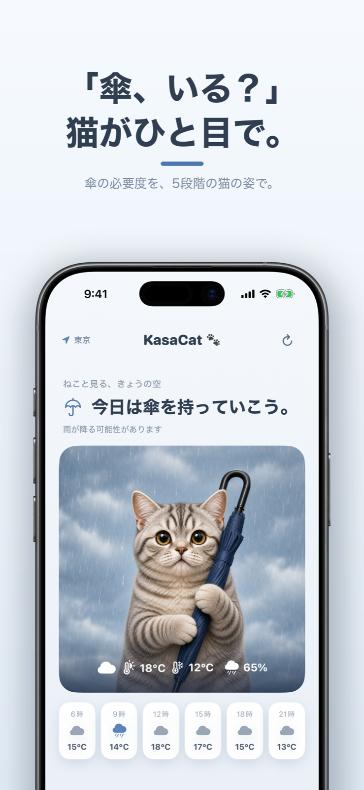
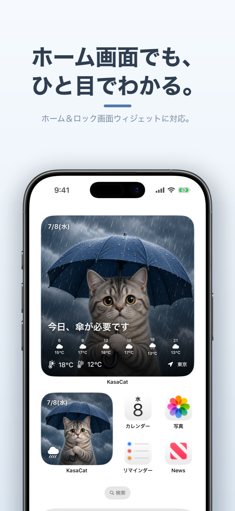

KasaCat
カサキャット
RAIN COMPANION · 天気
雨の予報を親しみやすい猫の表情と一緒に確認し、傘を持つ判断を軽くする天気アプリです。

降水の見込みから、今日傘を持つべきかをわかりやすく伝えます。

いつ降りそうかを時間帯で確認し、外出予定に合わせられます。
自宅や学校、職場など、気になる場所の天気を見られます。
予報を数字だけにせず、毎日見たくなる表情で届けます。
Made for you